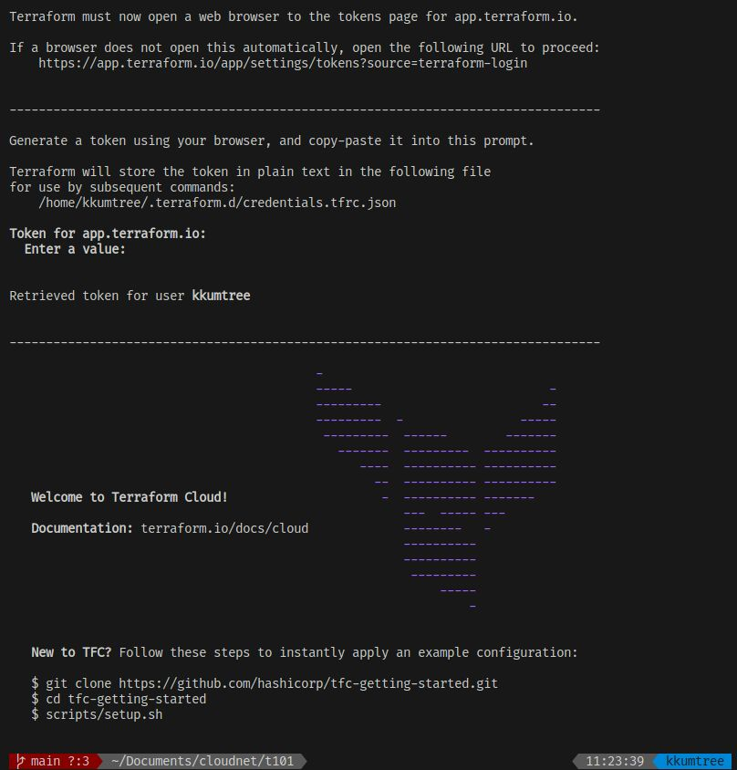
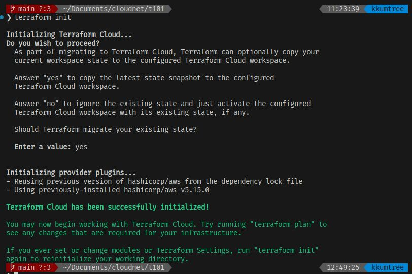
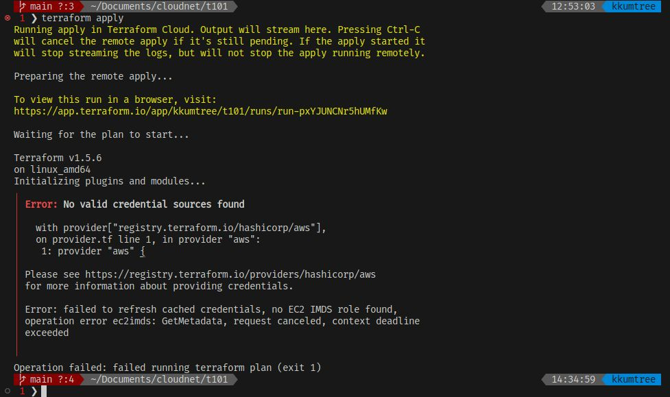
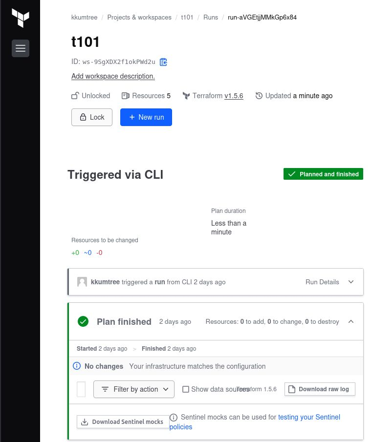
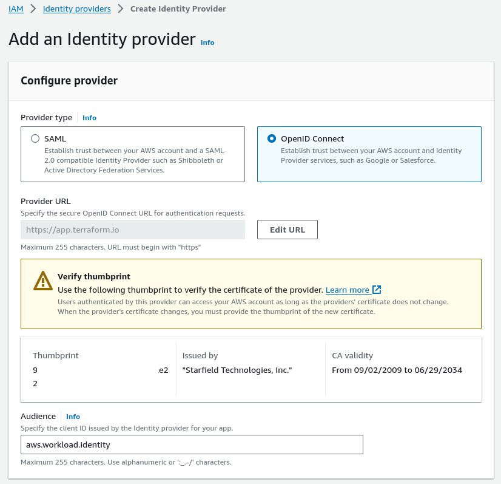
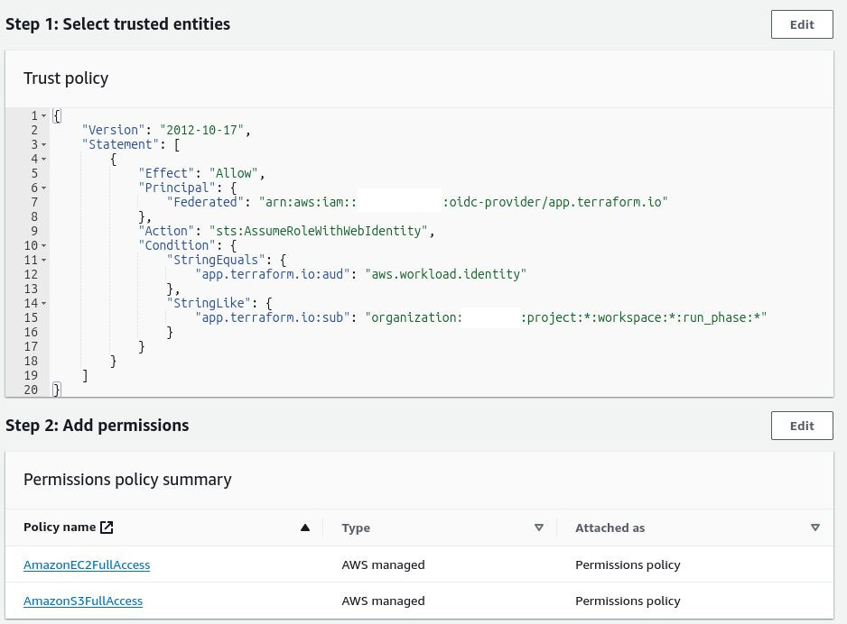
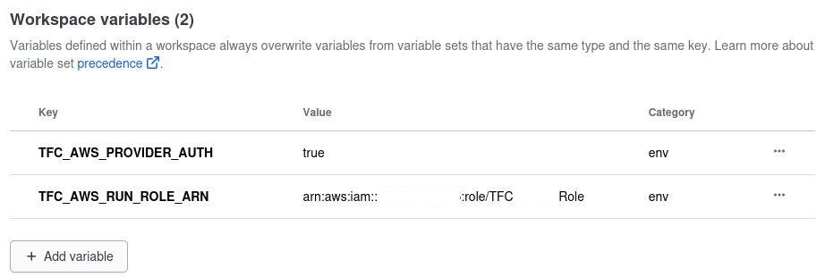
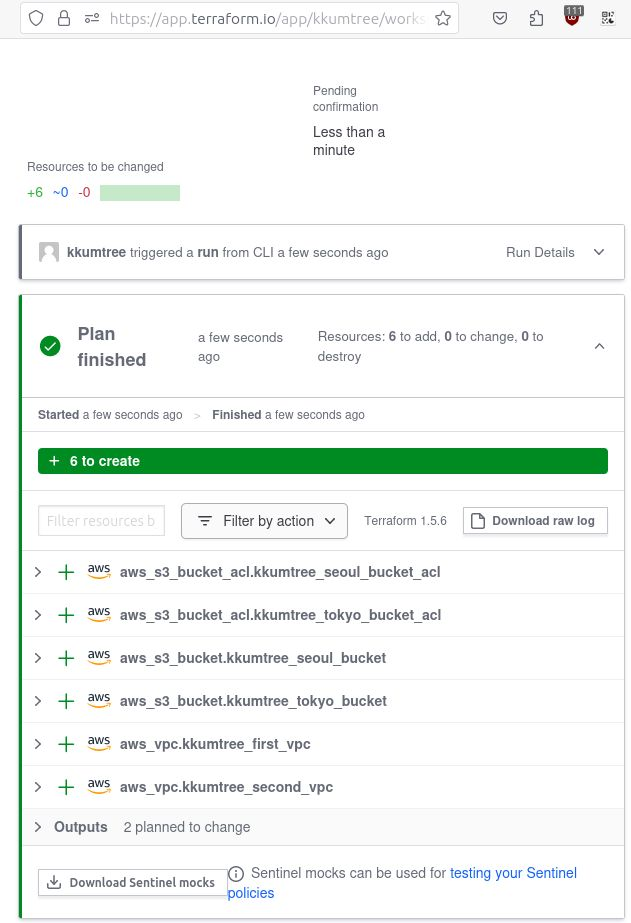
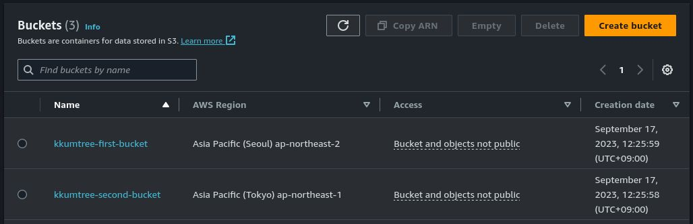
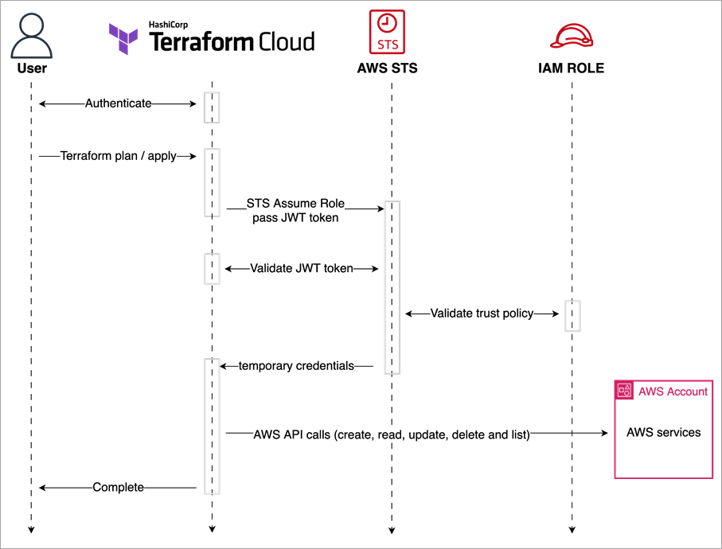

이번에는 Terraform Cloud가 얼마나 좋은지 더 알아보기 위해,
스터디에서 지속적으로 장점이 강조되어 왔던 Terraform Cloud에
IAM STS를 이용한 권한 부여 도전 및 적용 성공에 대해 써보려고 합니다.
Terraform의 상태 저장을 위해 보통 AWS S3를 사용하는데,
알다시피 S3 기록은 무료지만, 불러오는 것은 유료입니다.
(전기는 국산이지만, 원료는 수입입니다)
그래서 스터디용으로는 Terraform을 불러올 때마다,
상태 값을 S3말고, 로컬에 저장했었는데요.
밖에서는 노트북, 집에서는 데스크탑으로 하려니
이걸 GitHub의 Private Repo에 저장할까? 하다가
Terraform Cloud를 써보기로 했습니다. (고통의 시작)
1. Terraform Cloud 계정 생성 및 사용
- Terraform Cloud에 접속하여 계정을 생성합니다.
- 저와 같은 경우에는 GitHub 계정을 연동하여 생성하였습니다.
- 연동을 위해서, tf파일에 아래 블록을 추가합니다.
- 친절하게도 Terraform Cloud에서 튜토리얼을 제공하고 있습니다.
terraform {
cloud {
organization = "kkumtree"
workspaces {
name = "t101"
}
}
required_providers {
aws = {
source = "hashicorp/aws"
version = "~> 5.0"
}
}
}
- Organization: Terraform Cloud에서 생성한 Organization 이름을 입력합니다.
- Workspaces: Terraform 작업 단위의 이름을 지정합니다.
한 번 login 해보겠습니다.
[ terraform login ]을 입력해주세요.
- Token을 요구하는데요,
Terraform Cloud 웹 콘솔이 열리면서 토큰 발급 절차를 밟습니다.
열리지 않는 경우, 안내에 따라 token 세팅 페이지로 이동하여 발급해주세요. - 토큰은 당연하게도 다시는 조회할 수 없으니, 따로 보관해두세요.
이 토큰을 다시 터미널에 입력하면, Terraform Cloud에 접속됩니다.

- 다시, init을 해보겠습니다. 잘 되었네요.

- 그럼… apply를 해보겠습니다. 에러가 났네요.
- 분명, 로컬에 AWS Credential이 잘 세팅되어 있었는데요.

2. IAM Credential 생성 및 저장
- 한참을 헤메었는데… 단순하게도, Terraform Cloud의
workspace에 AWS Credential을 저장해야 했습니다. - 로컬에 AWS Credential을 조회하여(…) 이 값을
Terraform Cloud에 저장하면 됩니다. 참 쉽죠? - 다만, Variable 유형을 고를 때, Terraform variable이 아닌
Environment variable을 선택해야 합니다. - STS도 저장할 수 있는 것으로 알고 있었는데,
이렇게는 STS를 써본 적이 없어서, 아래 두 값만 넣어보았습니다.- AWS_ACCESS_KEY_ID
- AWS_SECRET_ACCESS_KEY: 반드시 Sensitive 설정!
- 캡처는 못했지만, AWS를 많이 써보셨으면 저보다 잘 아실 것 같아서
AZ를 data로 단순히 받아오는 작업을 걸었을 때, 잘 동작했습니다.

3. AWS Credential을 쓰고 싶지 않은데…?
문득, 위와 같은 생각이 들었습니다.
- Terraform Cloud 자체에서도 Token을 발급받아서 쓰는데,
Terraform Cloud 전용 IAM User를 만들어서
비밀키를 하드코딩해서 써야..하나? - Quick Start 가이드에서 STS를 쓰던데, 나는 왜 못쓰나…?
그래서, 한 번 찾아보았습니다. 찾아보았더니 아래 두 게시물을 참조하였는데요.
처음 게시물은 AssumeRole 생성 단계에서 막혀서, 두 번째 게시물을 토대로 진행하였습니다.
- SaturnCloud/Terraform Cloud/Enterprise: A Comprehensive Guide to Using AWS Assume Roles
- AWS/Simplify and Secure Terraform Workflows on AWS with Dynamic Provider Credentials
3.1 IAM OIDC IdP(identity Provider) 생성
- 먼저, AWS IAM에서 IAM OIDC Provider를 생성합니다.
- Provider type: OpenID Connect
- Provider URL: https://app.terraform.io
- Audience: aws.worklaod.identity
- 중간에 생성되는 Thumbprint는 IAM 콘솔에서 다시 조회 가능하니, 괜찮습니다.

3.2 신뢰 개체(Trusted entities) 생성
- IdP를 통해, Terraform Cloud과 AWS IAM간의 신뢰 관계를
구축하는 것이기 때문에 신뢰 개체를 생성해야 합니다. - 게시물을 토대로 기재하되, 두 값은 직접 입력해야 합니다.
- <AWS계정ID>: AWS 계정 ID로 변경
- <TFC조직명>: Terraform Cloud 생성한 계정에서 만든 조직으로 변경
{
"Version": "2012-10-17",
"Statement": [
{
"Effect": "Allow",
"Principal": {
"Federated": "arn:aws:iam::<AWS계정ID>:oidc-provider/app.terraform.io"
},
"Action": "sts:AssumeRoleWithWebIdentity",
"Condition": {
"StringEquals": {
"app.terraform.io:aud": "aws.workload.identity"
},
"StringLike": {
"app.terraform.io:sub": "organization:<TFC조직명>:project:*:workspace:*:run_phase:*"
}
}
}
]
}
3.3 권한 부여
현재는 VPC 및 EC2, 그리고 S3 생성을 할 것이기에 두 가지 정책을 추가했습니다.
- AmazonEC2FullAccess
- AmazonS3FullAccess

3.4 Terraform Cloud에 Variable 설정
AWS에서의 지정이 끝났으니, Terraform Cloud에서도 설정을 해야 합니다.
기존의 AWS Credential을 삭제하고, 아래와 같이 설정합니다.
- TFC_AWS_RUN_ROLE_ARN: arn:aws:iam::<AWS계정ID>:role/<생성한Role이름>
- TFC_AWS_PROVIDER_AUTH: true
아래 값은 기본값이 aws.workload.identity 이기 때문에
조직내에서 IAM AUDIENCE를 변경한 경우에만 설정합니다.
- TFC_AWS_WORKLOAD_IDENTITY_AUDIENCE

4. 구동 확인
이제 아래와 같이, 작성하고 멀티 리전에 S3 버킷을 생성하는 작업을 해보겠습니다.
- 서울 리전에도
alias="seoul"을 추가하고,
provider = aws.seoul로 지정하고 싶었지만 오류가 나서 해제!
# main.tf
terraform {
cloud {
organization = "kkumtree"
workspaces {
name = "t101"
}
}
required_providers {
aws = {
source = "hashicorp/aws"
version = "~> 5.0"
}
}
}
provider "aws" {
region = "ap-northeast-2"
}
provider "aws" {
region = "ap-northeast-1"
alias = "tokyo"
}
# S3
resource "aws_s3_bucket" "kkumtree_seoul_bucket" {
bucket = "kkumtree-first-bucket"
tags = {
Name = "kkumtree-t101-seoul-bucket"
}
}
resource "aws_s3_bucket" "kkumtree_tokyo_bucket" {
provider = aws.tokyo
bucket = "kkumtree-second-bucket"
tags = {
Name = "kkumtree-t101-tokyo-bucket"
}
}
- TFC에서도 처리가 잘 되었음을 확인했고(ACL오류 빼고),
AWS 콘솔에서도 잘 생성되었음을 확인했습니다.
 
5. 마치며
이번 포스트에서는, AWS와 HashiCorp가 권장하는 Dynamic provider credentials를 이용하여
Terraform Cloud를 사용할 수 있도록 셋업하는 방법을 알아보았습니다.
- 적용 중, 발생하는 오류는 댓글로 남겨주시면 같이 알아보겠습니다.

- 참고로 Terraform에서
alias를 남용하는 것은 좋지않고,
리전 별 격리하는 것을 추천한다고 하네요.